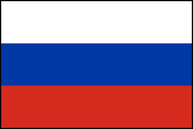

Гимн России
Россия — священная наша держава,
Россия — любимая наша страна.
Могучая воля, великая слава —
Твоё достоянье на все времена!
Славься, Отечество наше свободное,
Братских народов союз вековой,
Предками данная мудрость народная!
Славься, страна! Мы гордимся тобой!
От южных морей до полярного края
Раскинулись наши леса и поля.
Одна ты на свете! Одна ты такая —
Хранимая Богом родная земля!
Славься, Отечество наше свободное,
Братских народов союз вековой,
Предками данная мудрость народная!
Славься, страна! Мы гордимся тобой!
Широкий простор для мечты и для жизни
Грядущие нам открывают года.
Нам силу даёт наша верность Отчизне.
Так было, так есть и так будет всегда!
Славься, Отечество наше свободное,
Братских народов союз вековой,
Предками данная мудрость народная!
Славься, страна! Мы гордимся тобой!
(Слова Сергея Михалкова)

Сайт Президента России
Сайт Правительства России
Сайт Совета Федерации
Сайт Государственной Думы
Сайт Конституционного Суда
Сайт Верховного Суда
Статья о России на Википедии
Статья о населении России на Википедии
Статья о русском языке на Википедии